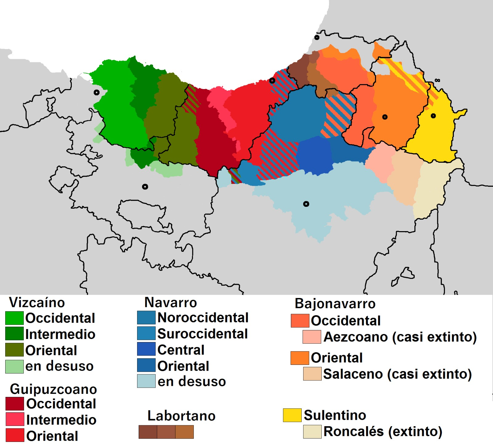

Understanding the language and culture of a new place is key to feeling at home. In this section, you'll find everything you need to know about the official languages of the Basque Country—Basque (Euskara) and Spanish—along with useful phrases and tips to help you settle in smoothly.
The Basque Country has two official languages: Basque (Euskara) and Spanish (Castellano). Each language offers its own unique window into the local culture and history, and knowing a bit about both will greatly enhance your experience here.
Euskara is one of the oldest languages in Europe and has no known relation to any other language family. This makes it truly unique! While you’ll primarily hear Spanish in most parts of the Basque Country, the local population takes pride in Euskara, and learning a few words will go a long way in connecting with the community.
A bit of history: Euskara has been spoken in the region for centuries. Today, the standardized version, Euskara Batua, is taught in schools and used for official communication, though different dialects exist in various regions.
Ready to try out some Euskara? Here are a few common phrases to get you started:
Don’t worry if you don’t speak it fluently—locals are generally very welcoming and appreciative of any effort to speak Euskara. Just a simple “Kaixo” (hello) or “Eskerrik asko” (thank you) can brighten someone’s day!
Spanish, or Castellano, is spoken widely across the Basque Country and is used in most day-to-day interactions. Whether you're ordering food, asking for directions, or socializing, a good grasp of basic Spanish will come in handy.
Learning a new language can be both fun and rewarding. Here are some practical tips to help you on your language journey:
Language is deeply intertwined with culture, and learning Euskara or Spanish will help you better appreciate the Basque Country’s rich heritage. From traditional festivals to the warmth of everyday greetings, you'll discover that language is more than just a means of communication—it’s a bridge to understanding the Basque way of life.
Embrace the challenge and enjoy the journey of language learning. Whether you master a few phrases or dive deep into the grammar, each step you take will enrich your experience in the Basque Country.